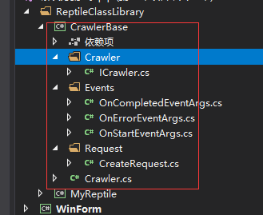

出于学习的目的,然后就写了这个
下载地址 https://gitee.com/youlicc/a_simple_reptile
下图，效果就是这样...
总结分析

CreateRequest.cs这个类是我自己写的。
这个基础类是在github上找的，地址我忘了。使用理由：这份代码搭建了基类模型。（我在学习设计模式，也在尝试，但是总感觉写出来的东西很别扭、七不像，所以倒不如先学习别人的写法，努力提高代码质量。）
然后我在简单包装了下
最后出炉...
学习并深化使用异步，学习傻瓜是封装